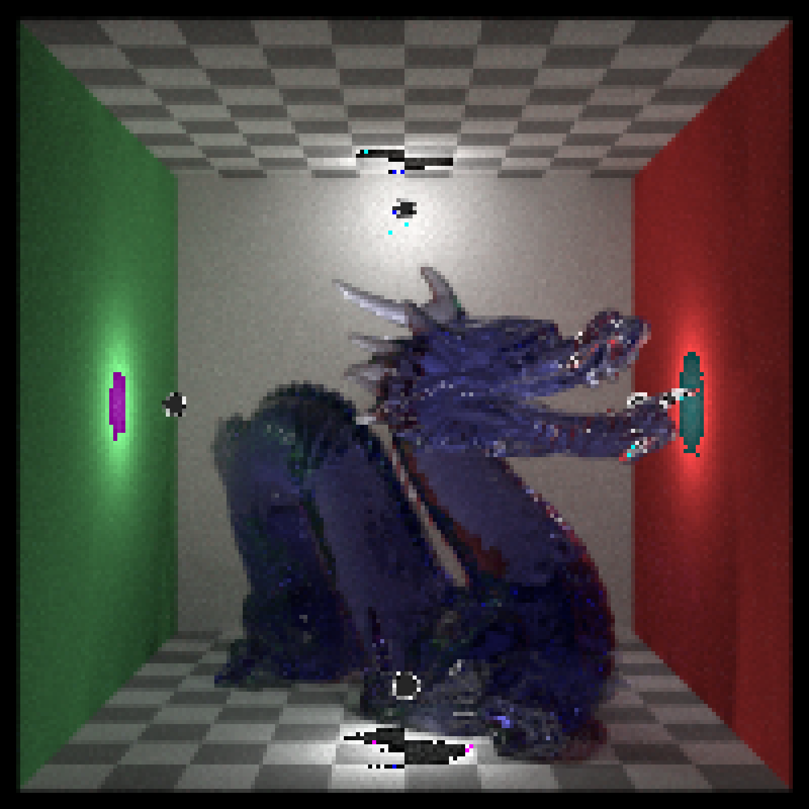
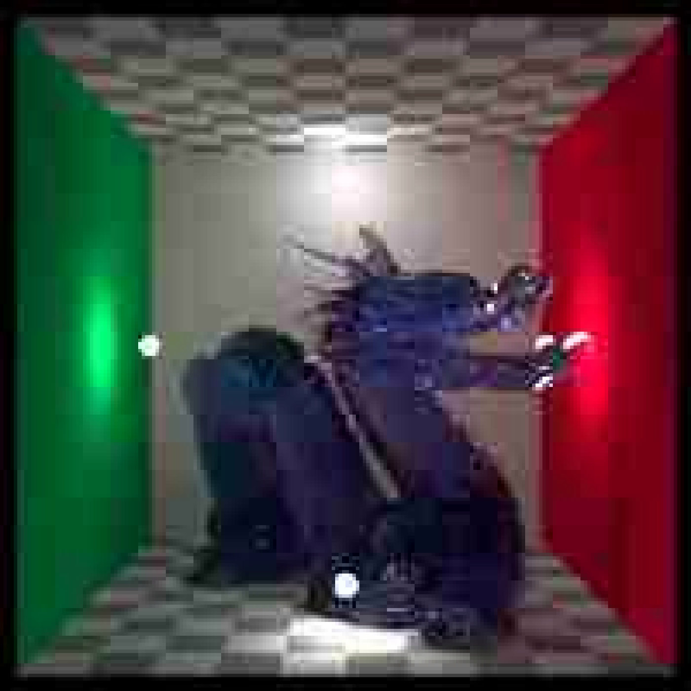
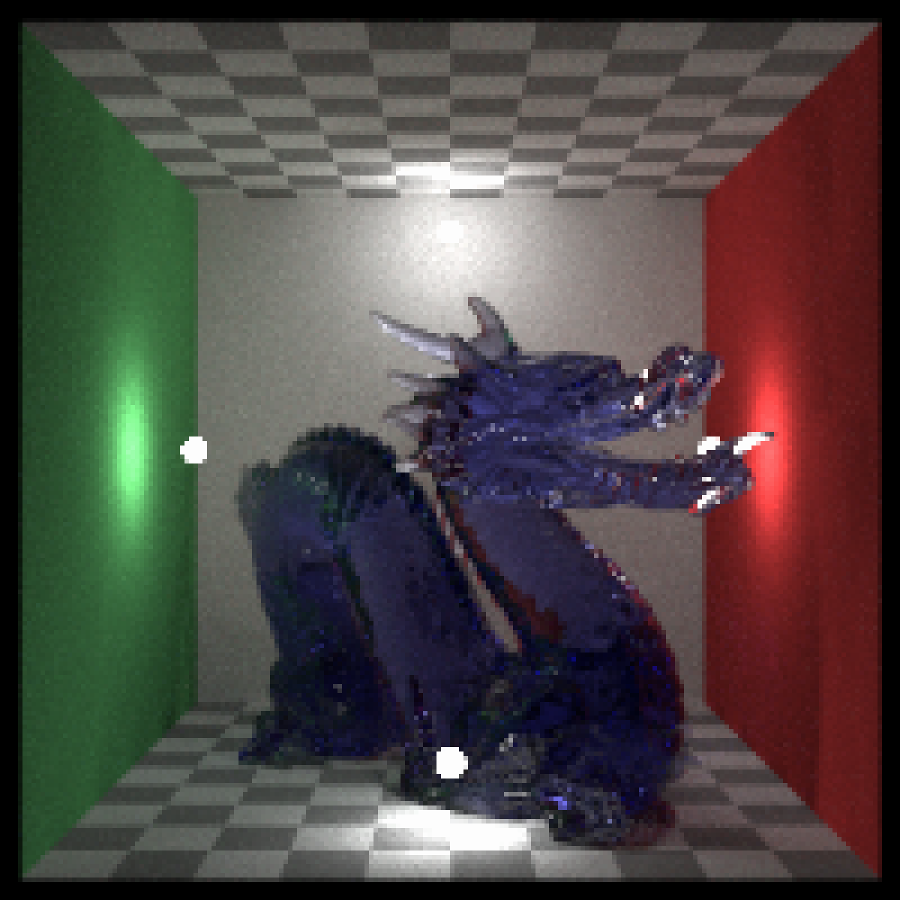
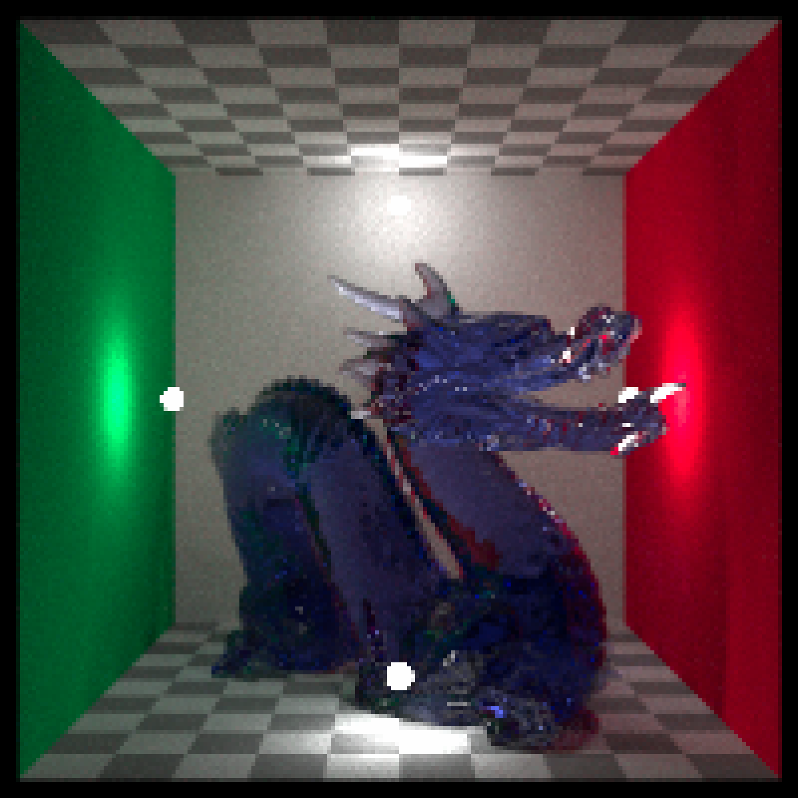

Reads an image from a file/array/matrix. From files, supports
JPEG, PNG, TIFF, TGA, BMP, PSD, GIF, HDR, PIC, PNM, EXR,
and DNG images.
ray_read_image(
image,
convert_to_array = FALSE,
preview = FALSE,
source_linear = NA,
normalize = FALSE,
dng_normalize = FALSE,
normalize_to = CS_ACESCG,
normalize_adapt_white = TRUE,
assume_colorspace = NULL,
assume_white = NULL,
...
)3-layer RGB/4-layer RGBA array, rayimg class, or filename of an image.
Default FALSE. Whether to convert 2D B&W images/matrices to RGBA arrays.
Default FALSE. If TRUE, it will display the image in addition
to returning it.
Default NA, automatically determined based on the image type.
Whether the image source is linear data or sRGB. TRUE for matrices, arrays, and
floating-point HDR formats (EXR, HDR), and DNG; FALSE for all other file-based formats
(e.g., jpeg, png, tiff, tga, bmp, psd, gif, pic, pnm).
Default FALSE. If TRUE, convert to normalize_to space on read. Note that
rayimg inputs will keep their colorspace and ignore this option–use render_convert_colorspace()
to change an existing rayimg to a new colorspace.
Default FALSE. If TRUE, DNG data is normalized to 0..1,
using black/white levels; if FALSE, raw values are returned.
Default CS_ACESCG. Target colorspace when normalize=TRUE.
Default TRUE. If TRUE, Bradford-adapt source white to target white.
Default NULL. A colorspace descriptor (e.g., CS_SRGB,
CS_ACESCG). If given, the loaded image will be tagged with this space
rather than the default inferred by file type. No pixel conversion is performed
unless normalize=TRUE.
Default NULL. Scene/display white for the loaded image.
Either a named white ("D60","D65","D50","D55","D75","E") or XYZ with Y=1.
If NULL, uses assume_colorspace$white_xyz.
Arguments to pass to jpeg::readJPEG, png::readPNG, tiff::readTIFF,
or libopenexr::read_exr() for supported formats.
A rayimg RGBA array.
if(run_documentation()){
#Write as a png
tmparr = tempfile(fileext=".png")
ray_read_image(dragon) |>
ray_write_image(tmparr)
ray_read_image(tmparr) |>
plot_image()
}

if(run_documentation()){
#Write as a JPEG (passing quality arguments via ...)
tmparr = tempfile(fileext=".jpg")
ray_read_image(dragon) |>
ray_write_image(tmparr, quality = 0.2)
ray_read_image(tmparr) |>
plot_image()
}
#> Warning: JPEG decompression: Caution: quantization tables are too coarse for baseline JPEG

if(run_documentation()){
#Write as a tiff
tmparr = tempfile(fileext=".tiff")
ray_read_image(dragon) |>
ray_write_image(tmparr)
ray_read_image(tmparr) |>
plot_image()
}
#> Warning: TIFFReadDirectory: Sum of Photometric type-related color channels and ExtraSamples doesn't match SamplesPerPixel. Defining non-color channels as ExtraSamples.

if(run_documentation()){
#Write as an exr
tmparr = tempfile(fileext=".exr")
ray_read_image(dragon) |>
ray_write_image(tmparr)
ray_read_image(tmparr) |>
plot_image()
}
